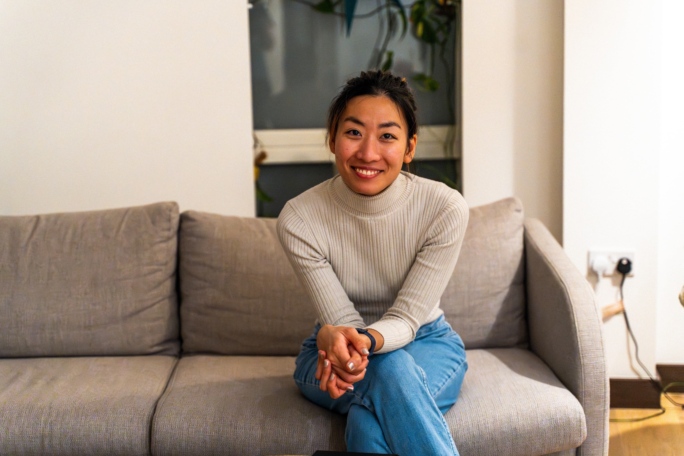

.png)
About Lily Lau
A thoughtful, creative and culturally sensitive approach to therapy.

Lily Lau
HCPC Registered Arts Therapist (Dramatherapist)
Professional Background
Founder of Dramatherapy Bay Ltd and a British registered dramatherapist, offering compassionate, professional and psychologically informed dramatherapy services in Cambridge and online.
Alongside her private practice, Lily works within NHS adult psychological services, bringing extensive clinical experience in supporting individuals with complex mental health needs, emotional distress and significant life transitions. Her work spans a range of psychological difficulties and diverse personal circumstances, informing a thoughtful and adaptable therapeutic approach.
Originally from Hong Kong, Lily brings a multicultural perspective to her practice, with an appreciation of how culture, identity, personal experiences and individual circumstances shape the way we understand and express ourselves. She has a particular interest in working with diverse populations and creating inclusive therapeutic spaces where people feel respected, understood and supported.
Multicultural Expertise
Trilingual practice ensuring cultural sensitivity and accessibility for diverse communities.
English
FluentCantonese
FluentMandarin
FluentTherapeutic Philosophy
"I believe in the inherent capacity for healing that exists within every person. Through creative expression and collaborative therapeutic work, we can unlock potential for growth and transformation."
Areas of Specialization
Lily has extensive experience working with diverse populations and complex mental health conditions.